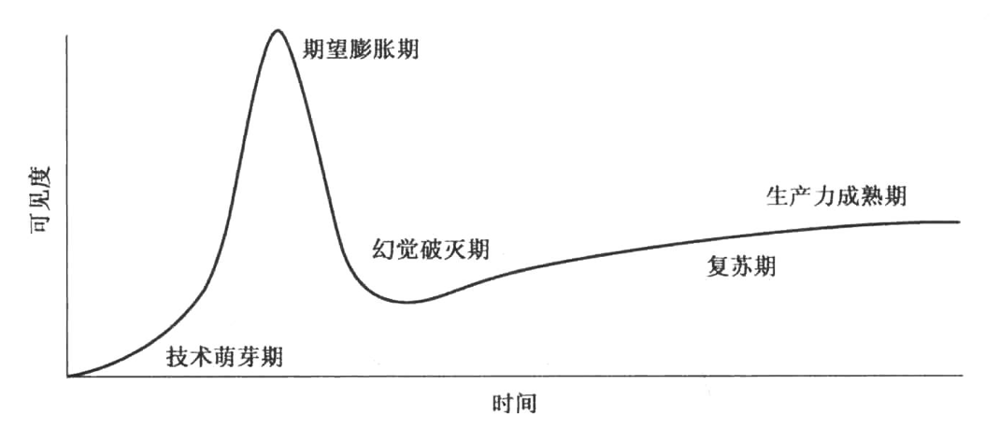

第28章 制作游戏的技术¶
基础性的和装饰性的¶
要对技术保持理智，一个很实在的方法就是理解基础性的技术和装饰性的技术之间的区别。
基础性技术：让一种全新的游戏体验变成现实。
装饰性技术：只能让已存在的体验变得更好。
每次遇到新技术时问问自己“我要怎样让这项技术成为我游戏的基础？”
技术成熟度曲线¶

1. 技术萌芽期：新技术第一次被发现或公布时
2. 期望膨胀期：有很多人在谈论一项技术，而实际使用它的人数却较少的时期。“没有人真正了解它，但每个人都说它很棒”。
3. 幻觉破灭期：当技术无法达到人们酝酿已久不断升温的期待时，人们才学会用冷静客观的态度来看待，这时候很多技术都会很快退热，甚至遭到嫌弃。
4. 复苏期：工业生产中的专业人士开始掌握新技术的正确打开方式，并加以利用以获得生产力或利润的提升
5. 生产力成熟期：新技术带来的好处被整个行业认识和接受，这个阶段曲线的高度取决于新技术是否有足够大的适用范围。
任何新技术都会经历这些阶段，而人们总是无法学会预测它的出现。
作为游戏设计师，你需要从技术成熟度曲线的故事中学会下面3件事：
1. 免疫性：训练自己对新技术的免疫性，这样就不会把整个职业生涯赌在某个还没被证明可用的技术上
2. 预防针：如果你能通过让其他人了解技术成熟度曲线来帮别人注射疫苗，就可能会从危险的决策中拯救你的整个团队。
3. 融资技巧：如果你遇到一个满脑子都是对某技术“期望膨胀”的金主，在你向他兜售游戏设想时，他对你的兴趣完全和你酷炫的设计无关，而是相信跳上新技术的火车就能保证他赚得盆满钵满。你可能想要说服对方设计比技术重要，但对方是绝对不会听的。唯一管用的技巧就是在“幻觉破灭期”之前融资到账，然后不管使用什么技术，尽你最大的努力来做好游戏。
创新者的困局¶
创新者困局：当新技术出现时，它是和已有技术完全不同的东西，但还不足以代替原有技术。当你向用户征求对新技术的看法时，他们一定会说“这还不够好”。但不管你和用户怎么看待，新技术也会慢慢发展成熟，你突然再次发现它时————几乎是一夜之间的感觉————新技术一下就跨越魔法分界线，变成了“足够好”的东西，而所有之前持否定意见的用户也会突然间“跳车”到另外一辆更快、更好、更便宜的“颠覆性技术”的列车上。
如果你能够设法为正在“突破瓶颈”的技术设计适合的游戏，你就可以踏着新技术的浪潮占领一片完全空白的市场————首先，要保证新技术在你的游戏中的应用是基础性的。
104号透镜：技术
- 什么样的技术能够实现我想要创造的体验？
- 我现在使用的技术是基础性的还是装饰性的？
- 如果我选择的技术没有提供基础性的功能，是否还应该继续选择它？
- 这项技术的实际效果有达到我的预期吗？
- 我是否能找到更具革新性的技术来代替现有的技术？
看看你的水晶球¶
技术的快速发展的一大影响就是人们往往拼尽全力试图理解眼前的新技术，而忘记了考虑未来会发生的事情。
预测未来的行为本身也会改变你看待世界的方式，可以试着用下面的例子来开始：
- 4年以后的客厅游戏娱乐会是什么样子？和我们现在主流的游戏有什么不同？
- 对8年以后，请做出同样的话题的预测。
- 从现在开始2年后，下载游戏和零售版（光盘或者其他物理载体）游戏各占多少市场比例？为什么？5年后这个比例又会怎样？
- 平板电脑会变成主流的游戏设备吗？为什么？
- 下一波多人在线游戏的大潮会是关于什么的？为什么？
- 小型游戏开发工作室在未来4年会做什么样的游戏？
- 大型游戏开发工作室在未来4年会做什么样的游戏？
- 体育类游戏4年后会是什么样子？
- 第一人称射击游戏4年后会是什么样子？
- 4年后你最喜欢的游戏类型是什么？
- 未来4年会有哪些全新的游戏类型出现？为什么？
最后得到的预测结果本身并不重要，你需要的是做出假设依据的基础。经过这样的过程，你不光对于技术发展有了更好的直觉，而且对人们如何看待一项技术也有深入的认识。
经过练习，预测技术的未来走向并不是那么困难，而且很容易形成习惯。
105透镜：水晶球
- 这项技术2年后会变成什么样子？为什么？
- 这项技术4年后会变成什么样子？为什么？
- 这项技术10年后会变成什么样子？为什么？
为什么人们对技术如此狂热¶
技术提供了古往今来每个人想要寻找的东西：乌托邦。对于人人平等、无限财富的理想世界是每个人共同的追求。
在某种意义上，电子游戏特别符合这个梦想。毕竟我们的创造有着无限可能，不仅仅是你输我赢的游戏，而是完整的世界————一个比现实更美好、更令人激动、更公平的世界。
玩家期待我们这些游戏的创造者能带领他们走进理想的世界，而当他们发现我们知道路在何方时，就会很快失去信心并停止关注我们的新游戏和系统。
所以，在我们选择使用的技术时，最重要的就是选择能够引领我们建设一个更好世界的技术。下面5种技术最有机会实现我们的梦想。
1. 魔法界面：符合人们直觉的界面已经不够了，玩家会想要具有魔力的交互界面。
2. 公平支付：如果你能设计出让玩家总觉得超值的购买系统，加上继续创造好玩游戏的能力，玩家和开发者都会随你而行。
3. 少点A，多点I：让人工智能（AI）变得更真实。电脑革命中最大谎言就是电脑会像人类一样思考和交流。我们现在还差得很远————但能够最先实现拟人化的人工智能的领域很可能就是游戏，因为游戏中的人工智能不需要表现得很完美，它们只要做到有趣和能够吸引玩家就可以了。
4. 家庭和好友我们还有更多未被开发的和亲人好友玩的游戏机会。
5. 成长游戏：如果你能够让他们通过游戏成为他们想要成为的人，从精神上、身体上、智力上产生根本的变化
106号透镜：理想世界
- 我正在创造的东西会让普通人感觉具有魔力吗？
- 人们听到我在制作的东西时会感到激动吗？为什么？
- 我的游戏是否确实地提升了行业标准？
- 我的游戏会让世界变得更好吗？